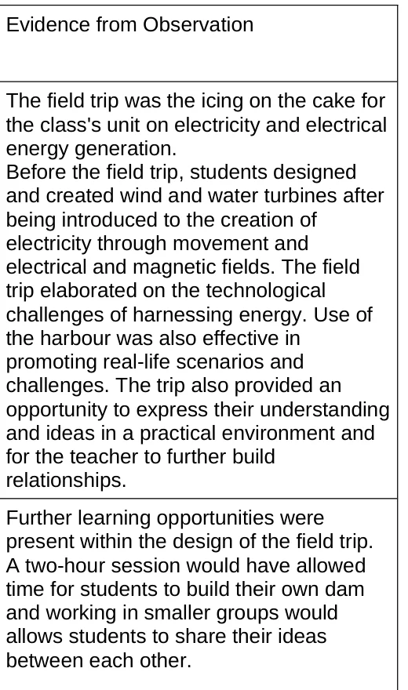

Goal
Plan, organise and evaluate a curriculum-linked local field trip, working collaboratively with my mentor and relevant school or community partners.
Rationale
A local field trip can connect classroom Science with electricity generation in the community. Planning it will develop my ability to coordinate an accessible learning experience with colleagues and relevant partners.
Action steps
1. Develop the beach investigation with my mentor teacher, choosing a feasible wind- or water-powered generator model and a clear link to the electricity unit.
2. Coordinate the required school approval, supervision, consent, equipment and access arrangements, including a suitable alternative where needed.
3. Prepare linked learning activities, help deliver the trip and evaluate students’ learning and the experience with my mentor teacher.
Success criteria
1. I secure the required approval and arrangements and prepare activities with a clear curriculum purpose and appropriate support for participation.
2. I help deliver the trip, collect student-learning evidence and evaluate the experience with my mentor teacher, recording improvements for future planning.
Midpoint evaluation
I have participated in four field trips, with another coming up, and observed how teachers manage learning, engagement and behaviour outside the classroom. I still need to develop my understanding of the planning requirements. My next step is to work with my mentor on safety protocols, risk assessment and documentation for a curriculum-linked local trip.
Final evaluation and next steps
I worked with my mentor teacher to plan and deliver the beach investigations on 19 and 20 November. These gave students an opportunity to test the wind and water turbines they had designed and built during the electricity unit. Preparing the models, equipment and activities helped me understand more of what is involved in organising learning outside the classroom. My lesson evaluations and the Week 8 mentor feedback record how the investigations went.
The windmills worked well, but building a functioning reservoir was too ambitious within one lesson. On Thursday we used a nearby hose so the water turbines could still be tested. On Friday, better equipment and preparation for difficulties helped the lesson run more smoothly, although the reservoir still did not function as a proper dam. My mentor teacher recognised the planning, enthusiasm and creativity, and recommended a longer session and smaller groups.
I feel that I have made substantial progress in planning, delivering and evaluating a field trip with my mentor teacher. We also completed the safety and risk assessment together through the school’s ERP system. Since I did not have login credentials, we discussed each point before he entered it into the form. The experience helped me realise that an engaging idea also needs sufficient time for students to build, test and discuss their designs. Next time, I would test the setup beforehand, allow more time or prepare part of the reservoir in advance, and have an alternative ready.
Links to professional standards / KTT
Standard 3 - Professional relationships: collaborative planning and communication with my mentor teacher and relevant partners.
Standard 5 - Design for learning: purposeful, accessible learning beyond the classroom.
Standard 6 - Teaching: delivery and assessment.
Standard 2 - Professional learning: evaluation and response to feedback.
Key Teaching Tasks
KTT 2: Designing learning connected with the local environment and community.
KTT 3: Working collaboratively with my mentor teacher to plan and deliver the investigations.
KTT 7: Connecting the electricity curriculum with practical turbine testing.
Evidence
- My account of collaborative risk assessment: I discussed each point of the beach trip’s safety and risk assessment with my mentor before he entered it into the school’s ERP form.
- Science 1: beach electricity-generation lesson plan: Includes the 20 November delivery reflection and evaluation.
- Science 2: beach electricity-generation lesson plan: Includes the 19 November account of testing turbines and adapting the water source.

Excerpt from mentor teacher’s feedback (19 November 2026, page 1). - Week 8 reflection: Evaluates both trips, the reservoir difficulties and improvements for future planning.
- Completed beach investigations in the learning register: Records the 19 and 20 November learning events and their evaluations.
- Observations from school and learning events: Background learning about local settings, school culture and outdoor activities.